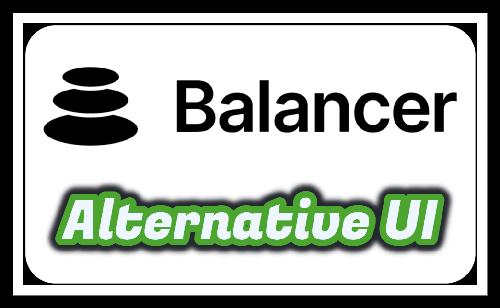

Building an alternative frontend for the balancer protocol.
This grant covers building an alternative frontend for the Balancer protocol.
One of the objectives is to allow users to continue to interact with the protocol in the event that the main site is down. And to reassure them that their assets are safe.
This grant comes from an idea from the Balancer community, an idea that was the subject of a request for proposal.
Easy to deploy and use, the alternative frontend will offer the following features: portfolio display, swapping, join/exit pool. The screens will be uncluttered but functionally complete.
The frontend will be built on top of the Balancer SDK, a technical library for interacting with the protocol. As this SDK is still under development, the new frontend will be an interesting opportunity to test and consolidate it.
This grant is an opportunity to deepen my skills in web3 dev and to learn how an automated market maker works. The deliverable will hopefully provide a useful tool for the Balancer community. And my participation, an external vision on the protocol devs. Aware that I have a lot to learn before mastering this vast project, I am however motivated...